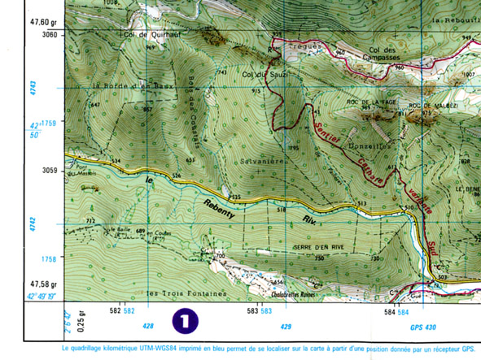
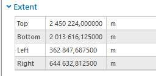
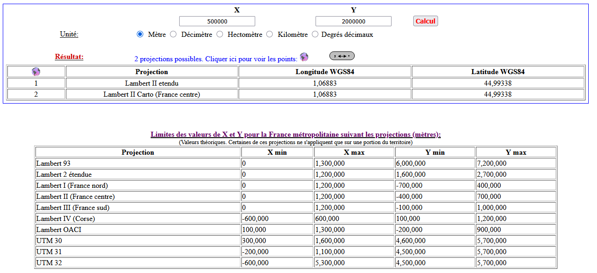
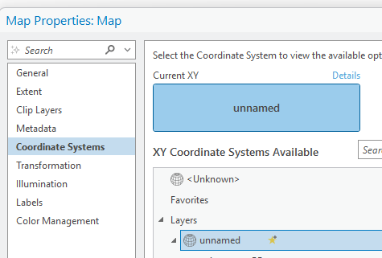
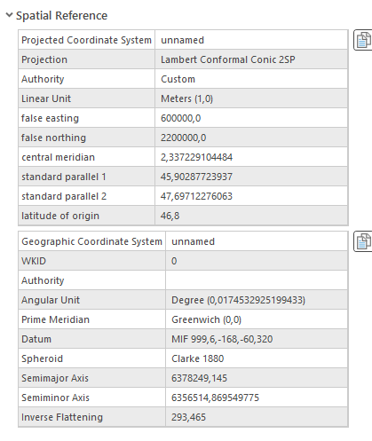
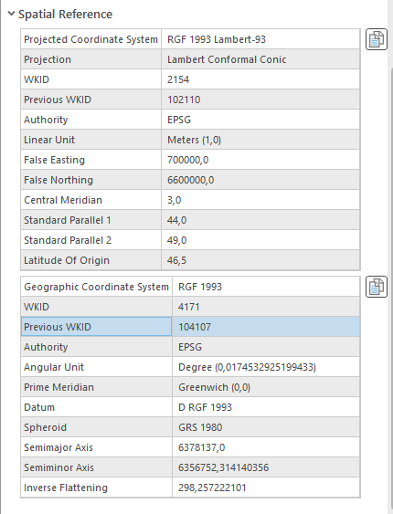
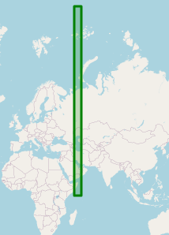
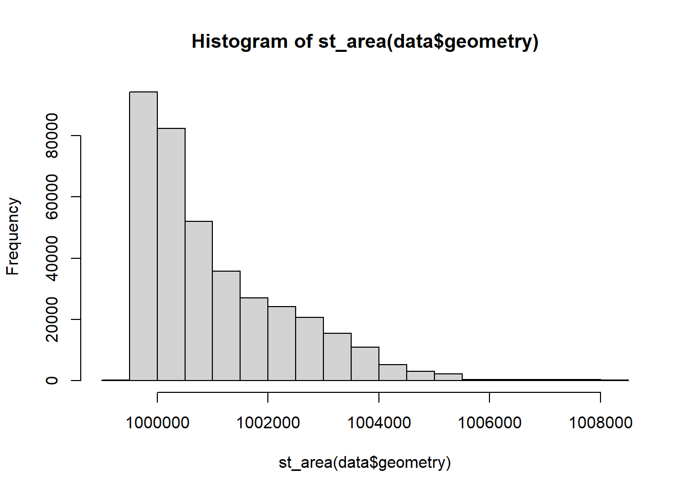
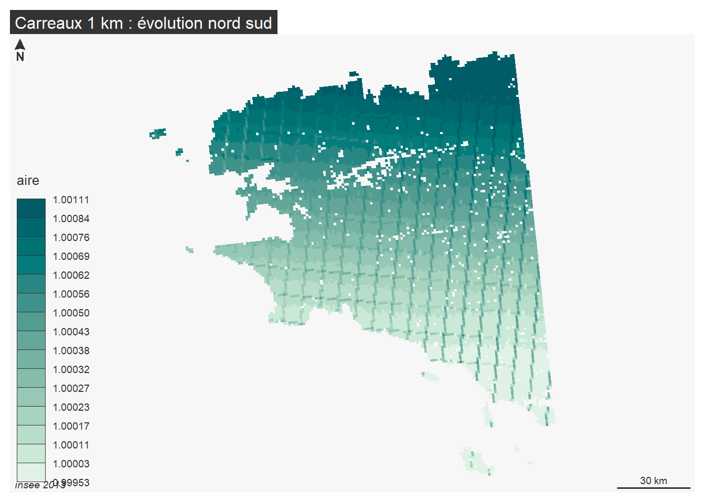

Code
read.csv("data/2Grilles.csv") X lat long
1 WGS84 41 / 52 -4 / 10
2 Lambert 93 6 / 7 millons 100 M / 1.2 millionEn fait au delà de l’exercice pratique de géoréférencement, il s’agit de faire un point sur les projections.
WGS84 / RGF93 / ETRS89
Observer une carte topo IGN : comprendre le quadrillage
2 quadrillages WGS 84 et Lambert 93

A connaître, les emprises de la France dans les deux systèmes
X lat long
1 WGS84 41 / 52 -4 / 10
2 Lambert 93 6 / 7 millons 100 M / 1.2 millionMais il y a beaucoup d’autres grilles, tous les CRS possibles sur une zone donnée avec les emprises CRS explorer
Autre outil :
http://bboxfinder.com/#0.000000,0.000000,0.000000,0.000000
La ressource est sur le site de l’insee, terme de recherche :
carreaux 1 km recensement population
Il faut prendre l’item : données carroyées à 1 kilomètre
Regarder le .pdf et trouver le système de projection
Qui porte ce système ? Pourquoi l’insee choisit ce système ?
Sous Arcgis Pro, la donnée s’ouvre-t-elle ?
Image pb licence
Prendre plutôt le fichier mise à dispo carreauPB.gpkg.

Il faut trouver un Y de 2 millions et un X de 500 M
https://geofree.fr/gf/projguess.asp, le tableau permet de voir toutes les emprises
voire même de mettre l’ordre de grandeur de l’emprise


### Couche

Qu’en déduire ?
On charge la donnée
Linking to GEOS 3.12.1, GDAL 3.8.4, PROJ 9.3.1; sf_use_s2() is TRUEReading layer `R_rfl09_LAEA1000' from data source
`C:\Users\tachasa\L6ECSIG\data\gros\R_rfl09_LAEA1000.mid' using driver `MapInfo File'Simple feature collection with 375278 features and 4 fields
Geometry type: POLYGON
Dimension: XY
Bounding box: xmin: 47880.75 ymin: 1620477 xmax: 1198092 ymax: 2677278
CRS: NAUsing the EPSG Dataset v10.019, a product of the International Association of Oil & Gas Producers.
Please view the terms of use at https://epsg.org/terms-of-use.html.Evaluating CRS options...The 'best guess' for the CRS of your data is EPSG code 32439.
Use `sf::st_crs(your_data) <- 32439` to use this CRS for your data.
View the returned dataset for other possible options.# A tibble: 8 × 2
crs_code dist_km
<chr> <dbl>
1 32439 2149.
2 32639 2149.
3 32239 2149.
4 6933 5117.
5 3857 5801.
6 3395 5802.
7 6931 10525.
8 3832 11505.
Simple feature collection with 10 features and 4 fields
Geometry type: POLYGON
Dimension: XY
Bounding box: xmin: 46.63099 ymin: 21.71906 xmax: 46.67323 ymax: 21.75716
Geodetic CRS: WGS 84
x_laea y_laea ind indXYNE1 geometry
1 3210000 2929000 10.0 0 POLYGON ((46.63358 21.72672...
2 3210000 2930000 26.0 0 POLYGON ((46.63228 21.73562...
3 3211000 2928000 1.0 0 POLYGON ((46.64446 21.71906...
4 3211000 2930000 46.0 0 POLYGON ((46.64188 21.73686...
5 3212000 2928000 42.5 0 POLYGON ((46.65405 21.72031...
6 3212000 2929000 55.0 1 POLYGON ((46.65276 21.72921...
7 3212000 2930000 157.5 0 POLYGON ((46.65147 21.73811...
8 3212000 2931000 5.0 0 POLYGON ((46.65018 21.74701...
9 3213000 2928000 23.0 0 POLYGON ((46.66364 21.72155...
10 3213000 2929000 90.0 0 POLYGON ((46.66235 21.73045...Dommage, mais 46,21 ce n’est pas -4 / 10 …
Heureusement, cela fonctionne sous Qgis de façon automatique.
Angle vs Aire
Dans les faits, on mesure les carreaux, ils sont supposés faire 1 km donc… en m² ?

Min. 1st Qu. Median Mean 3rd Qu. Max.
0.9995 1.0002 1.0004 1.0004 1.0006 1.0011 writing: substituting ENGCRS["Undefined Cartesian SRS with unknown unit"] for missing CRSDeleting layer `carLeger' using driver `GPKG'
Writing layer `carLeger' to data source `data/carreauPB.gpkg' using driver `GPKG'
Writing 13000 features with 5 fields and geometry type Polygon.
Que dire sur la déformation de l’espace ?
C’est le cas le plus fréquent en commune, les plans DAO ne sont dans aucun système de coordonnées.
Du coup, on le géoréférence à la main.
---
title: "Géoréférencement"
output:
html:
number_sections: true
toc: true
---
```{r setup, include=FALSE}
knitr::opts_chunk$set(echo = TRUE)
knitr::opts_chunk$set(cache = FALSE)
# Passer la valeur suivante à TRUE pour reproduire les extractions.
knitr::opts_chunk$set(eval = TRUE)
knitr::opts_chunk$set(warning = FALSE)
```
# Objet
En fait au delà de l'exercice pratique de géoréférencement, il s'agit de faire un point sur les projections.
# 3 datums à connaître
WGS84 / RGF93 / ETRS89
# WGS84 et Lambert 93
Observer une carte topo IGN : comprendre le quadrillage
2 quadrillages WGS 84 et Lambert 93

A connaître, les *emprises* de la France dans les deux systèmes
```{r}
read.csv("data/2Grilles.csv")
```
Mais il y a beaucoup d'autres grilles, tous les CRS possibles sur une zone donnée avec les emprises *CRS explorer*
Autre outil :
http://bboxfinder.com/#0.000000,0.000000,0.000000,0.000000
# Exercice 1 = trouver la projection des premiers carreaux insee
La ressource est sur le site de l'insee, terme de recherche :
*carreaux 1 km recensement population*
Il faut prendre l'item : données carroyées à 1 kilomètre
Regarder le .pdf et trouver le système de projection
Qui porte ce système ? Pourquoi l'insee choisit ce système ?
# Arcgis Pro
Sous Arcgis Pro, la donnée s'ouvre-t-elle ?
Image pb licence
Prendre plutôt le fichier mise à dispo carreauPB.gpkg.
## Emprise des données

Il faut trouver un Y de 2 millions et un X de 500 M
https://geofree.fr/gf/projguess.asp, le tableau permet de voir toutes les emprises
voire même de mettre l'ordre de grandeur de l'emprise

## Systèmes de coordonnées
### Au niveau du projet Arcgis

### Couche

Qu'en déduire ?
### R
On charge la donnée
```{r}
library(sf)
data <- st_read("data/gros/R_rfl09_LAEA1000.mid")
petit <- data [1:10,] # pour faire des tests
```
```{r}
# une bibliothèque permmet de suggérer le crs inexistant
library(crsuggest)
coordBondy <- c(48.9,2.46)
guess_crs(petit, coordBondy)
st_crs (petit) <- 32439
```

```{r}
# c'est un epsg qui concerne l'Azerbaidjan...
petit <- st_transform(petit, crs = 4326)
petit
```
Dommage, mais 46,21 ce n'est pas -4 / 10 ...
Heureusement, cela fonctionne sous Qgis de façon automatique.
# Exercice 2 aire des carreaux
Angle vs Aire
Dans les faits, on mesure les carreaux, ils sont supposés faire 1 km donc... en m² ?
```{r}
hist(st_area(data$geometry))
# filtrage pour représentation carto
data <- data [c(1:13000),]
data$aire <- st_area(data$geometry)/1000000
summary(data$aire)
# pour cartographier on filtre sur les 1500 premiers carreaux
st_write(data,"data/carreauPB.gpkg", "carLeger", delete_layer = T)
```
```{r}
library(mapsf)
mf_map(data, type = "choro", var = "aire", border = NA, leg_val_rnd = 5)
mf_layout("Carreaux 1 km : évolution nord sud", "insee 2013")
```
Que dire sur la déformation de l'espace ?
# Géoréférencer un plan DAO en O,O
C'est le cas le plus fréquent en commune, les plans DAO ne sont dans aucun système de coordonnées.
Du coup, on le géoréférence à la main.